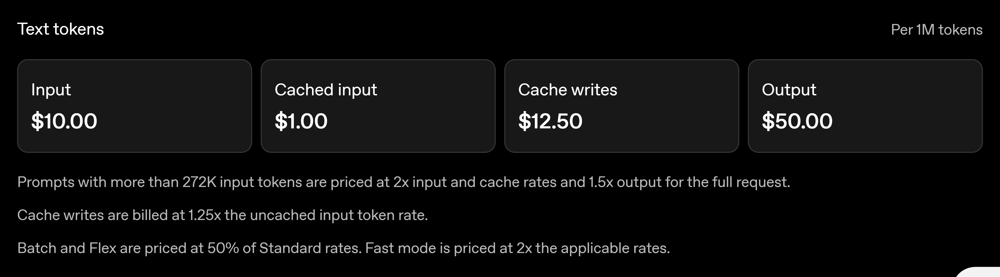
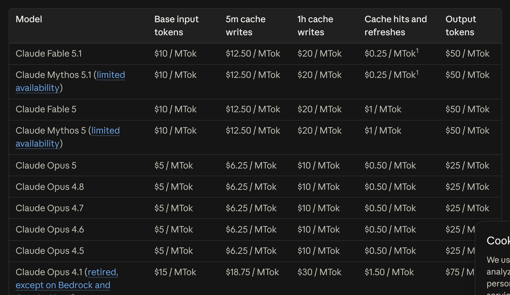
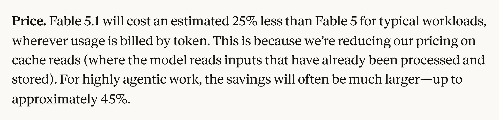
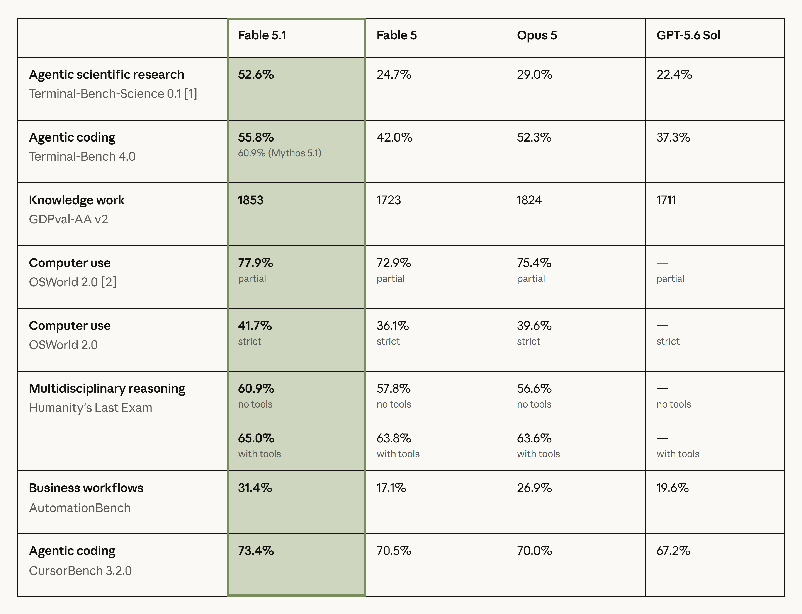
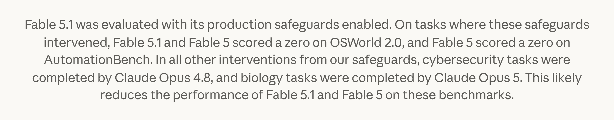

I opened both pricing pages side by side expecting to find the usual spread. Input, output, cache write, all identical to the cent. One line differs.
Anthropic announced Claude Fable 5.1 and Claude Mythos 5.1 on 1 September. OpenAI announced GPT-6 Astra on 3 September. Coverage split cleanly down the middle: the Anthropic stories were about price, the OpenAI stories were about AGI claims and cyber capability. I wanted to know what the price change was actually worth on my own workloads, so I did the arithmetic. It took me somewhere I did not expect.
One line differs, by 4x
Per million tokens, as of 6 September 2026:
| GPT-6 Astra | Claude Fable 5.1 | Claude Fable 5 | |
|---|---|---|---|
| Input | $10.00 | $10.00 | $10.00 |
| Output | $50.00 | $50.00 | $50.00 |
| Cache write | $12.50 | $12.50 (5 min) | $12.50 (5 min) |
| Cache read | $1.00 | $0.25 | $1.00 |
| Long context | over 272K billed at 2x input and cache, 1.5x output, for the whole request | 1M at standard rates | 1M at standard rates |

Anthropic’s pricing page carries the footnote that makes the intent explicit. Cache hits on Fable 5.1 and Mythos 5.1 are priced at 0.025x base input, and “All other models use the standard 0.1x multiplier.” OpenAI’s cached input is $1.00 against a $10.00 input price, which is that same standard 0.1x that Anthropic just broke for exactly one model generation.

So Anthropic did not cut its prices. It cut one multiplier, on one model family, and left Opus, Sonnet and Haiku where they were.
What one output token is worth in cache reads
Both labs made a cost claim this week and both claims live in the same equation:
with fresh input tokens, cache-read tokens and output tokens. Since and match, the two labs are pulling different terms. Anthropic pulled , from $1.00 down to $0.25. OpenAI pulled and , claiming Astra needs fewer tokens per task. Its Terminal-Bench 4.0 line puts Astra at 57.9 percent against Fable 5.1’s 55.8 percent “at approximately 63% lower estimated API cost per task”, and with identical unit prices that number can only come from token counts.
The exchange rate between the two levers falls straight out of the tables. A million output tokens costs $50. A million cache-read tokens of Anthropic discount is worth $0.75. So
One output token saved is worth about 67 cache-read tokens of Anthropic’s discount. Below 272K tokens, holding fresh input equal, Astra is cheaper exactly when
Solving Anthropic’s own two numbers
Anthropic says Fable 5.1 costs about 25 percent less than Fable 5 for typical workloads and up to about 45 percent less for highly agentic work, and that the whole reduction comes from cache reads.

Only moved, so the saving fraction is
Set to each published value and solve. At 25 percent, . At 45 percent, . With no fresh input at all these become floors: to reach 25 percent a workload has to read at least 25 tokens from cache for every token it emits, and to reach 45 percent, at least 75. Any fresh input pushes both floors up.
Read backwards, the two marketing numbers describe the workloads Anthropic measured. Take a session that re-reads a large stable context every turn, say . Hitting 45 percent then needs , which is a cache hit rate on input tokens of about 95 percent. That is the shape behind the number: input outweighing output by roughly 400 to 1, almost all of it hitting cache.
Where the discount does nothing
Anthropic’s own docs carry a worked example of a cached session: 10,000 uncached input tokens, 40,000 cache reads, 15,000 output tokens. Repricing it on the two frontier models:
| Fable 5.1 | GPT-6 Astra | |
|---|---|---|
| Fresh input, 10,000 | $0.100 | $0.100 |
| Cache reads, 40,000 | $0.010 | $0.040 |
| Output, 15,000 | $0.750 | $0.750 |
| Total | $0.860 | $0.890 |
Three cents. The cache ratio here is 2.67 to 1, nowhere near 66.7, so output swamps everything and the 4x cache advantage buys you nothing.
Now scale to a long agent session. Forty turns re-reading a 200K-token context, 500 output tokens a turn, gives 8,000,000 cache reads against 20,000 output tokens. The cache line goes from $2.00 on Fable 5.1 to $8.00 on Astra, against $1.00 of output on both. A line worth one percent of the small bill is now worth two thirds of the large one. Push the context past 272K and Astra’s cache read doubles again to $2.00 per million, an 8x gap, because Anthropic bills a 900K request at the same per-token rate as a 9K one and OpenAI does not.
Both of those assume equal token counts, which is the assumption OpenAI’s own claims dispute. So I plotted the whole family instead, letting Astra need some fraction of Fable’s tokens for the same task:
If Astra needs 70 percent of the tokens, Fable 5.1 takes the lead past 33 cache reads per output token. At half the tokens, past 100. Even taking OpenAI’s 63 percent cost claim at face value, which implies , the crossover is at 263 to 1.
Neither lab is being dishonest. They are quoting different terms of the same equation, and which term dominates is a property of your workload, not of either model. If you run short, output-heavy calls, the cache line is noise and token efficiency decides it. If you run long sessions over a stable context, the cache line decides it and the 272K threshold matters more than any benchmark.
The number under Fable 5.1 was not all Fable 5.1
While I was in the announcement pages for the pricing, the benchmark table stopped me.

Fable 5.1 scores 55.8 percent on Terminal-Bench 4.0. Directly beneath, in the same cell, Mythos 5.1 scores 60.9 percent. Anthropic states plainly that the two are the same model with different levels of safeguards. So 5.1 points of agentic coding performance is the price of the safeguard configuration, quantified by the lab, on its own launch page.
The footnote under that table goes further:

Where safeguards intervened, the task was handed to a different model and that result counted. On some rows the number printed under “Fable 5.1” was produced partly by Opus 4.8 and Opus 5. The row measures a routing system. Anthropic says so, and says which direction the bias runs, which is more than the reader of a leaderboard aggregating that row will ever see.
OpenAI does the mirror image. Astra’s cyber results, 100 percent on ExploitBench against 78.5 percent for GPT-5.6 Sol, 42.4 percent on ExploitGym, 88.0 percent on SRE-Bench at the first attempt against 55.9 percent, were all measured “without production safeguards”. The Astra you can call refuses proof-of-concept exploit generation. OpenAI plans to lift that for vetted defenders through a programme called Daybreak.
Both then built a vetting programme to unlock the looser regime: the Cyber Verification Program and the Life Sciences Verification Program on one side, Daybreak on the other.
Two risk labels that cannot be compared
OpenAI says Astra “meets the Critical threshold in cybersecurity under our Preparedness Framework”, the first model to do so. Anthropic says Mythos 5.1 “demonstrates the strongest cyber capabilities of any model we’ve released, though it still falls within the lower category of risk in our Frontier Compliance Framework.”
Two frontier models five days apart, comparable agentic coding scores, opposite-sounding labels. These are different documents with different thresholds, so this says nothing about which model is more dangerous. It says the labels do not survive being read across labs, and they are increasingly read that way.
What each lab did in practice is closer than the labels suggest. Anthropic loosened Fable 5.1’s cyber safeguards to around 60 percent fewer interventions per Claude Code session and now allows vulnerability discovery, while still redirecting penetration testing, exploit generation and binary-based vulnerability scanning to Opus models. OpenAI shipped Astra able to do secure code review and patching while refusing proof-of-concept exploits. Same shape, different vocabulary.
The flag count and the instrument
One more number is worth handling carefully. Astra’s deployment simulation reports about 53 percent fewer flags for higher-severity misaligned behaviour than GPT-5.6 Sol, 34 flags against 73 across 54,218 tasks.
In the same release, OpenAI reports that its evaluations found Astra’s written reasoning harder to monitor than Sol’s, which it attributes to Astra controlling its written reasoning more and solving problems in fewer written steps. OpenAI flags the decline itself and calls improving monitorability a research priority.
A flag count is a property of the monitor as much as of the model. When the monitored channel gets less informative in the same release that the flag count falls, the fall is consistent with better behaviour and also consistent with less visible behaviour, and the count alone cannot separate them. That is not a claim that Astra is misaligned. It is a claim that this particular number cannot carry the weight a reader will put on it, for the same reason you cannot compare instrument readings across a calibration change.
What I take from it
Three things I will do differently after this week.
Price on your own token shape, not on the sticker. Pull , and out of your last month of usage, put them in the equation above, and the vendor comparison answers itself. The two headline cost claims from this week are both true and neither one is about your workload.
Record the safeguard configuration next to any benchmark number you cite. Fable 5.1 at 55.8 and Mythos 5.1 at 60.9 are the same weights. Astra at 100 percent on ExploitBench is a configuration nobody can call. A score without its configuration is missing half its identity.
Treat cross-lab risk labels as internal to each lab until someone publishes a mapping. Critical and lower-category are not points on a shared scale.
Astra also reports 99.9 percent on ARC-AGI-3. I competed in that benchmark and wrote about why its design resisted the usual routes to a high score, so I have been waiting to see that number move. It moved.
Prices, benchmark figures and safeguard details are Anthropic’s and OpenAI’s, from the Fable 5.1 and Mythos 5.1 announcement, the GPT-6 Astra announcement, the Astra model page and the Claude pricing docs, all read 6 September 2026. The five screenshots are unmodified captures of those pages. The cost model, the exchange rate, the workload shapes solved out of Anthropic’s 25 and 45 percent figures, and both drawn figures are mine, and every number traces to a record in the post’s research folder.